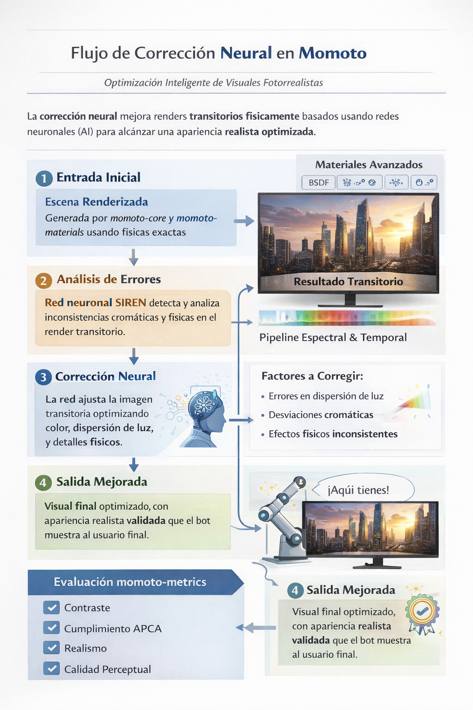

Live Pipeline
How Momoto Works
Trace a brand color through Momoto's full perceptual pipeline: from raw hex input through physics-accurate color science, accessibility validation, SIREN neural correction, and final tonal palette generation.
1
Color Input — parse & decode
Color.fromHex · sRGB decode
›
#5577cc
sRGB r=85 g=119 b=204
Linear R=0.1007 G=0.2122 B=0.6038
import init, { Color } from 'momoto-wasm';
await init();
const fg = Color.fromHex('#5577cc');
// → r:85 g:119 b:204 alpha:1.0
↓ color space transforms
2
Color Space Conversion — OKLCH · OKLab · HCT
hexToHct · oklchToHct · OKLab.fromColor
›
OKLCH — Perceptual Polar
L 0.537 C 0.165 H 265°
L∈[0,1] · C≥0 · H∈[0,360)
L∈[0,1] · C≥0 · H∈[0,360)
OKLab — Perceptual Cartesian
L 0.537 a -0.019 b -0.164
uniform for interpolation
uniform for interpolation
HCT — CAM16 + CIELAB
H 263.8° C 37.4 T 44.1
Material Design 3 model
Material Design 3 model
const [hue, chroma, tone] = hexToHct('#5577cc');
// hue=263.8 chroma=37.4 tone=44.1
const oklch = new OKLCH(0.537, 0.165, 265);
const lab = OKLab.fromColor(fg);
// L=0.537 a=-0.019 b=-0.164
↓ WCAG 2.1 + APCA-W3 v0.1.9
3
Accessibility Analysis — WCAG & APCA metrics
wcagContrastRatio · APCAMetric · wcagPasses
›
Foreground #5577cc on background #07070e
WCAG 2.1 Contrast Ratio
4.21 : 1 ✗ AA
1:1AA 4.5AAA 7.021:1
APCA-W3 v0.1.9 Lightness Contrast (Lc)
Lc 58.3 ✗ Body
0heading 60body 75106
const fg = Color.fromHex('#5577cc');
const bg = Color.fromHex('#07070e');
const ratio = wcagContrastRatio(fg, bg); // 4.21
const passes = wcagPasses(ratio, 0, false); // false — AA needs 4.5
const apca = new APCAMetric();
const lc = apca.evaluate(fg, bg).value; // 58.3 Lc (body needs ≥75)
↓ SIREN [9→16→16→3] ω₀=30 · 483 params
4
SIREN Neural Correction — perceptual delta computation
computeSirenCorrection · applySirenCorrection
›
The SIREN network takes 9 inputs (bg OKLCH, fg OKLCH, APCA Lc, WCAG ratio, quality score) and outputs perceptual correction deltas clamped to safe ranges.
+0.042
ΔL ∈ [−0.15, +0.15]
+0.008
ΔC ∈ [−0.05, +0.05]
−1.2°
ΔH ∈ [−10°, +10°]
// bg OKLCH: L=0.04, C=0.02, H=270 // fg OKLCH: L=0.537, C=0.165, H=265 const corr = computeSirenCorrection( 0.04, 0.02, 270, // background 0.537, 0.165, 265, // foreground 58.3, 4.21, 62.0 // APCA Lc, WCAG ratio, quality ); // → deltaL=+0.042 deltaC=+0.008 deltaH=-1.2° const [L2, C2, H2] = applySirenCorrection( 0.537, 0.165, 265, corr.deltaL, corr.deltaC, corr.deltaH ); // → L=0.579 C=0.173 H=263.8°
↓ gamut clamp → validated output
5
Validated Output — accessible pair + 13-tone MD3 palette
hctTonalPalette · hctToHex · agentValidatePair
›
#6188d8 ✓ AA 5.1:1
OKLCH(0.579, 0.173, 264°) | HCT(264, 39, 47)
APCA Lc = 76.4 ✓ Body text
13-TONE HCT TONAL PALETTE (tones 0 → 100)
0
10
20
30
40
50
60
70
80
90
95
99
100
const [h, c] = hexToHct('#6188d8'); // h=264, c=39
const palette = hctTonalPalette(h, c); // 39 values [H,C,T × 13]
const tones = [0,10,20,30,40,50,60,70,80,90,95,99,100];
tones.forEach((t,i) =>
console.log(`Tone ${t}: ${hctToHex(palette[i*3], palette[i*3+1], palette[i*3+2])}`)
);
// Validate the corrected pair
const check = JSON.parse(agentValidatePair('#6188d8','#07070e','wcag','aa'));
// → { passes: true, ratio: 5.1, level: "aa" }
Reference diagrams

SIREN Neural Correction Flow
9→16→16→3 network, 483 params, ω₀=30. Corrects OKLCH pairs for perceptual quality.
siren.rs
AI Visual Generator Pipeline
4-phase agent pipeline: recommend → configure materials → render → validate.
agent.rs · materials_ext.rs